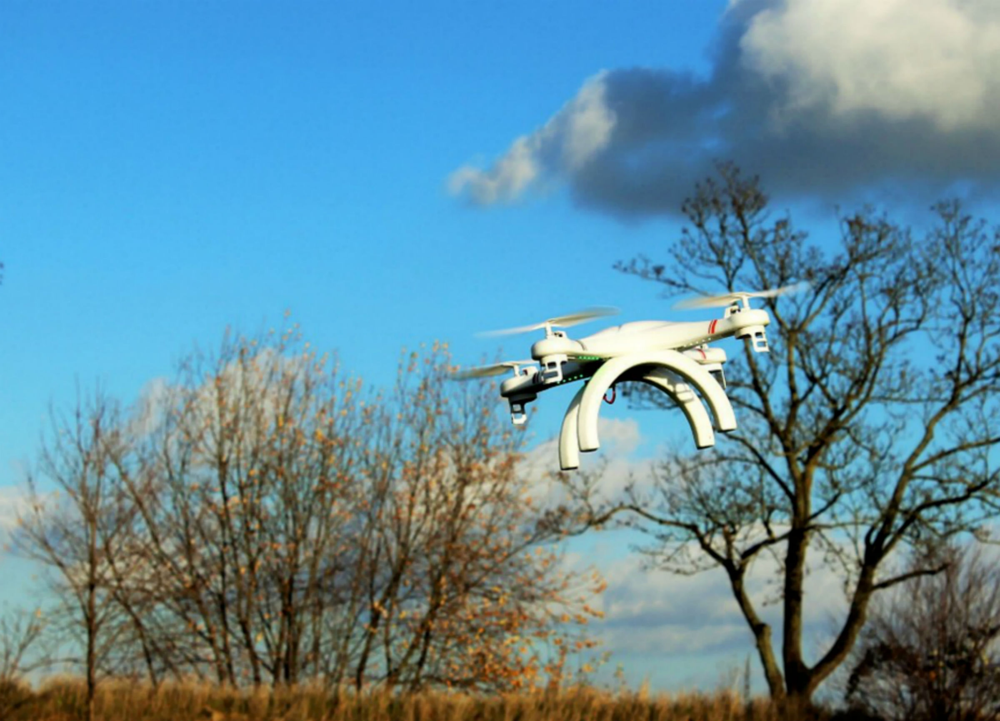
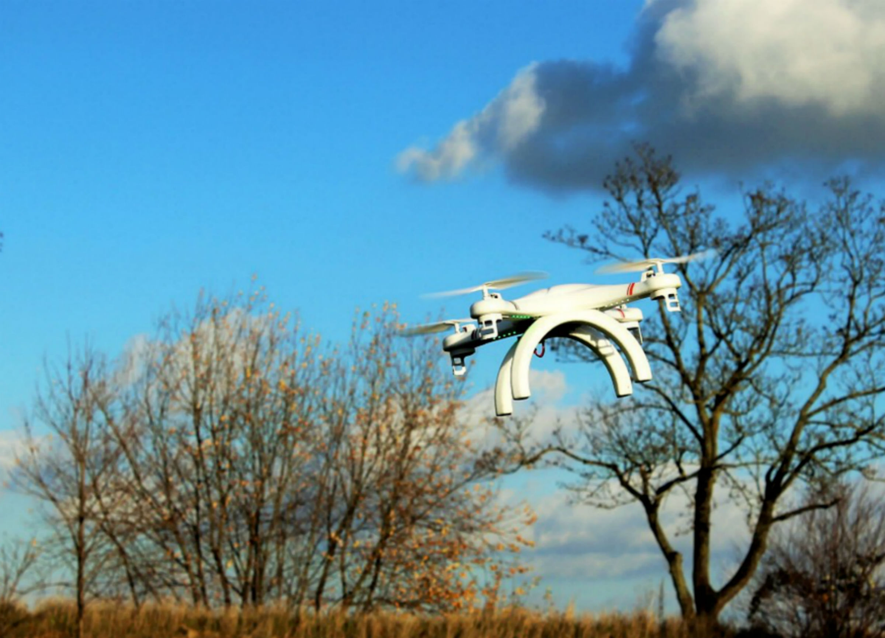
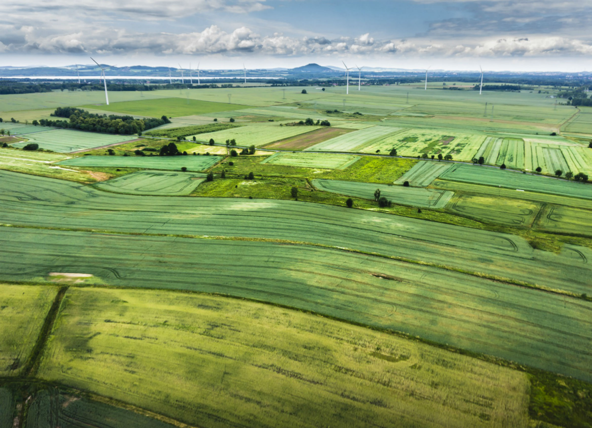
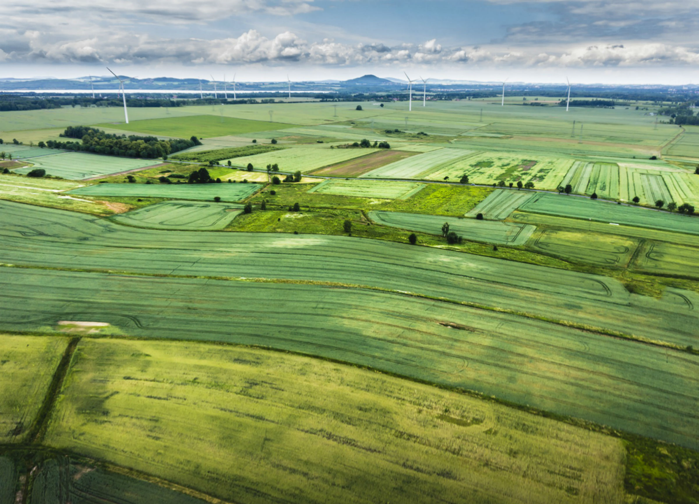
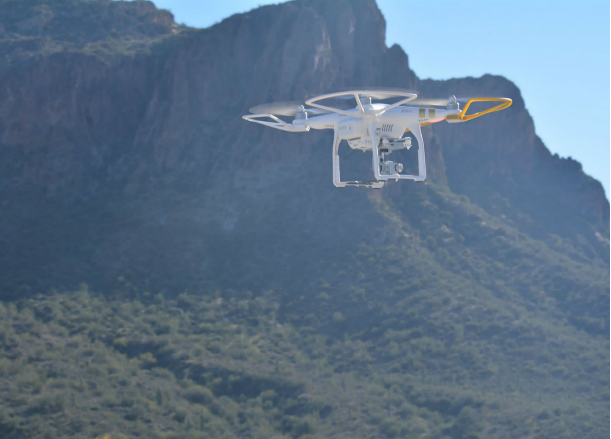
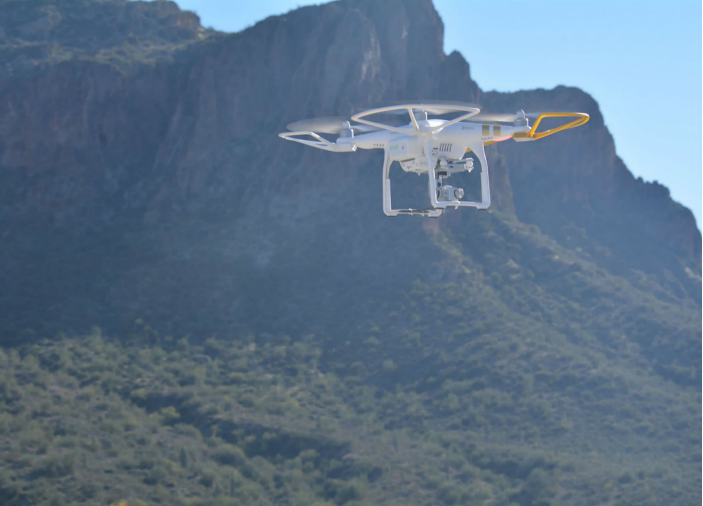

Overview
Delivery
Internet Service
News
Photography
Agriculture
Hollywood
Huricane Tracking
3D Mapping
Wildlife Monitoring
Education: Math & Science
Education: Social Studies
Education: Language Arts
Education: Physical Education
 


 



 


Drones can be used to improve many aspects of our lives. In business, drones can be used for things from delivery to agriculture. Due to their speed, they would readily increase the productivity of the business world. Drones can also be used for research as they are able to quickly collect large amounts of accurate information, including storm patterns and changes in temperature. In the classroom, drones can be used to improve the quality of education and expose students to another aspect of the tech world. At the moment, drones are heavily regulated by the FAA (Federal Aviation Administration), and so use is limited, but as policies change, drones may become things we see everyday.
Currently, many companies are working on using drones to deliver goods from medicine to food. Amazon is testing drones that could be capable of delivering packages in as little as 30 minutes after online purchase. There are strict Federal Aviation Administration rules in place, however, and Amazon has only gotten permission for research but not yet implementation. Another company, Flirtey, completed its first drone delivery in the United States in 2015, and claims the title as the first FAA approved drone delivery service.
UAS technology could bring internet to the most remote parts of the globe. In 2014, Facebook purchased Ascenta, a solar-powered drone maker, and shortly after announced their plans for a “Connectivity Lab.” The goal of the project is to bring Internet to the third-world using namely drones. In fact, Facebook just recently announced that it has finished a full-scale version of such a drone. Access to the internet could provide a source of information and income to some of the poorest people in the world. Other companies are working on this technology as well, most notably Google.
Soon we may see small drones hovering over car accidents and following police chases instead of costly news helicopters. Drones equipped with cameras would be able to fly lower and take close up shots of the action, instead of the wide aerial shots provided by the helicopters, improving the quality of news footage.
Commercial photography would greatly benefit from the use of drones. Real estate agents could hire drone-specialized photographers to take aerial images of properties. Festival organizers could hire-out drones to take images events and take accurate head-counts of attendees. Recently, the FAA approved Elevated Element, a Maryland-based business that provides “drones-for-hire” to take images of properties and events. It is possible we will be seeing many similar businesses popping up very soon.
According to the World Bank, the world will need a 70 percent increase in agricultural production in order to support our growing population, which is expected to reach 9 billion by 2050. “Precision agriculture” using drones may be the answer to this. UAVs would use cameras and other sensors to collect data to help monitor the farm. The data collected would allow farmers to, among other things, monitor plant growth, possible disease outbreaks, and weed growth. This would allow farmers to quickly address problems, more accurately predict future yields and crops, and plan new irrigation and drainage. All of this would reduce costs and increase yield, helping the farmers be more profitable and feeding more people.
Drones could also make Hollywood movies better. Instead of using helicopters to take aerial views, filmmakers could use drones to get these same views but with a much more specific flight path, allowing them to experiment creatively. Drones are also much cheaper than helicopters, and so would allow small-budget films the possibility of shots that they previously would have been unable to afford.
Recently, drones have begun to be used to study the development of hurricanes. Drones are able to fly directly into the storm without the fear of loss of human life, providing accurate reports on temperature, pressure, humidity, and the location of the storm. This allows scientists to better understand the storm, helping them to more accurately predict the storm’s magnitude and pathway. In 2013, NASA used its drone Global Hawk to study Tropical Storm Gabrielle off the coast of Bermuda. Drone use has continued to this day, giving scientists very valuable information.
Drones can be used to accurately map landscapes, opening up a realm of possibilities for their uses. For instance, after Hurricane Sandy, drones were used to provide relief to the Haitians. Mapping also allows farmers to manage crops in faraway fields and mining companies to monitor changes in mine pits. To do this, drones take detailed images and scans of land, noting changes in elevation and surface type (land, water, etc). Most recently, research has begun at the Imperial College, University College London, and the University of Bath on the use of 3-D mapping drones to provide 3-D printed shelter to people during emergencies that are located in areas disaster relief personnel cannot reach.
Organizations have begun to use drones to protect wildlife. In Colorado, the U.S. Geological Survey used a drone with a thermal imaging camera to survey the number of sandhill cranes in the area. Another nonprofit group, Conservation Drones, launched drones in northern Sumatra to monitor the nesting spots of orangutans. The data and images collected will help these organizations petition for protection of national park land and the nesting spots of the animals. Using drones drastically cuts the cost of gathering the data, allowing for larger and an increased number of such projects. Drones can also be used to combat poaching. The World Wildlife Fund uses drones to survey popular poaching grounds, tracking possible poachers and the movement of animals.
UAVs can be used in many educational settings, particularly elementary school. Most obviously, drones can be used to teach students about drone construction and design, as well as computer programming, math and electronics.Students could even learn to make a drone, preparing them for a technology-driven future. Students would also be able to use drones for scientific research. They could use them to take measurements of the area surrounding the school, from temperature to air quality, and survey the natural landscape.
Drones could also be used in other subjects in the elementary school, including social studies. Students could use drones to film simulations of migration and other significant historical shifts, whether that be population concentrations or the distribution of natural resources.
In language arts, drones could be used to film different perspectives of the same location or item. Students could then use these videos as inspiration for describing the item from different perspectives.
In physical education, drones could be used to film different sports plays from above, helping players grasp concepts more quickly.
- Overview
- Delivery
- Internet Service
- News
- Photography
- Agriculture
- Hollywood
- Hurricane Tracking
- 3D Mapping
- Monitoring and Protecting Wildlife
- Education: Math & Science
- Education: Social Studies
- Education: Language Arts
- Education: Physical Education